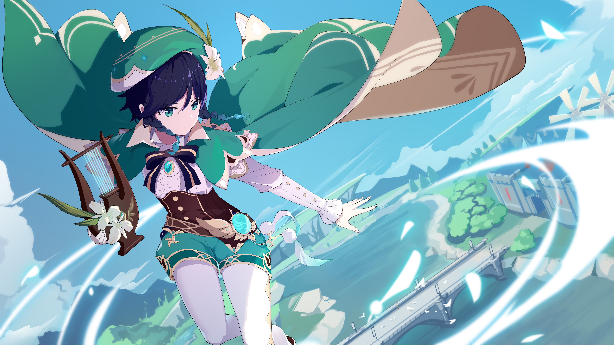

<HTML>
<HEAD>
<TITLE>Учебный файл HTML</TITLE>
</HEAD>


<html>
 <head>
 	<title>Фоновое изображение с помощью HTML</title>
 </head>
 <body bgcolor="#000" background="анемо.png">
 </body>
</html>


<BODY BGCOLOR="#FFFFCC" TEXT="#330066">
<P ALIGN="CENTER">
<FONT COLOR="#008080" SIZE="7">
<SPAN STYLE="BACKGROUND-COLOR:Aqua"><B> Персонаж Венти</B></FONT><BR></SPAN>
<SPAN STYLE="BACKGROUND-COLOR:lightgreen"><FONT SIZE="6"><I> Немного о персонаже </I></FONT></SPAN>
<BR><BR>





<!DOCTYPE html PUBLIC "-//W3C//DTD XHTML 1.0 Strict//EN" 
  "http://www.w3.org/TR/xhtml1/DTD/xhtml1-strict.dtd">
<html xmlns="http://www.w3.org/1999/xhtml">
 <head>
  <meta http-equiv="Content-Type" content="text/html; charset=utf-8" />
  <title>Поля</title>
  <style type="text/css">
   .space { 
    padding: 20px; /* Поля */
    background: #AFEEEE; /* Цвет фона */
    border: 2px solid #E81E25; /* Параметры рамки */
   }
  </style>
 </head>
 <body>
  <div class="space">


<div class="card">
		<h1 class="mb-3">«Поведай мне самые сокровенные желания, путешественник!»</h1>
		
<font size="4"><p>
	Венти — играбельный Анемо персонаж в Genshin Impact.
</p>
<p>
         Неведомые ветра привели барда в эти земли. Порой его песни стары как свет, а иной раз он напевает ещё ненаписанные строки.
</p>
<p>
	 Он любит яблоки и живую атмосферу, но не любит сыры и всё липкое.
</p>
<p>
	Когда он управляет ветрами, его Анемо сила проявляется в виде перьев. Венти привлекает их лёгкость и беспечность.
</p>
<p>
	 Более меткий прицельный выстрел с увеличенным уроном.
Во время прицеливания наконечник стрелы заряжается божественным ветром. Полностью заряженная ветром стрела наносит Анемо урон.Вызывает ещё большую силу ветра с Венти в её центре. Она наносит Анемо урон по площади и подкидывает попавших в её зону действия врагов. Эта версия навыка поднимает Венти в воздух.
</p>	</div>
  </div>
 </body>
</html>

<BR><BR>


<SPAN STYLE="BACKGROUND-COLOR:lightgreen"><B> Ссылки:<B><BR></SPAN>
</P>
<TABLE WIDTH=60%>
<TR><TD><A HREF="02.HTML"><SPAN STYLE="BACKGROUND-COLOR:Aqua">Сильные и слабые стороны персонажа Венти</A></TD>
<TR><TD><A HREF="002.HTML"><SPAN STYLE="BACKGROUND-COLOR:Aqua">Таланты и навыки персонажа Венти</TD>
<TR><TD><A HREF="0002.HTML"><SPAN STYLE="BACKGROUND-COLOR:Aqua">Созвездия персонажа Венти</TD>
<TABLE>
</BODY>
</HTML>
<BR><BR>

<input type="button" onclick="history.back();" value="Назад"/>